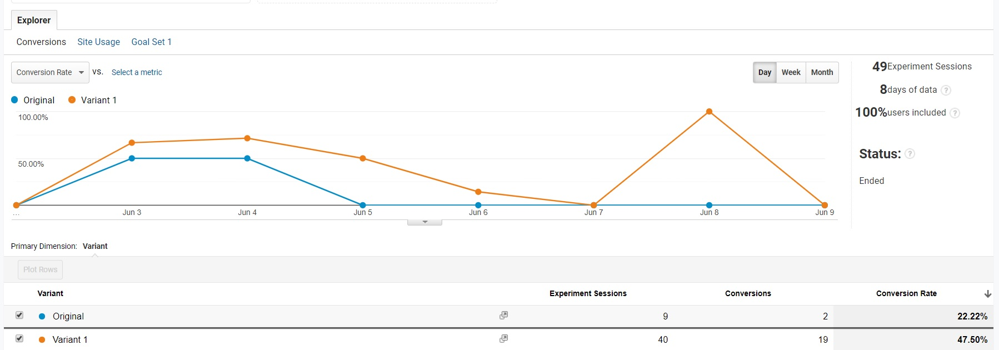

Intro & Set Up
In continuation of last week’s AB testing setup , I now have a week’s worth of data to analyze and interpret. To briefly review, I wanted to test how many conversions, or clicks on a certain link on the home page, that the original and variants can gather. I hypothesized that the variant would outperform the original by a large margin. Setting up this AB testing was simple and involved setting up a goal in Google Analytics and importing it into Optimize. From there, I needed to define the length of time the testing would take, create a variant page with changes (in my case, simple changes to text and color).
Analysis
By implementing this AB testing I hoped to prove that a simple stylistic change can make all the difference in driving or funneling traffic. After a week of running this test the results showed that:
 The conversion rates are: Original - 22.22% & Variant 1 - 47.5%As you can see from the above, variant 1 has double the conversion percentage compared to the original. What is curious is that even though I set up the weight for each version of the page at 50/50, variant 1 had 40 sessions compared to the original’s 9. This is something I would have to investigate for future testing but as it stands, the proposed changes make all the difference.
I would point out that my overall conversion rate is lower than the initial conversion rate of 75% back in week 7 when the goal was initially set up but that is mostly unreliable data as the people I sent links to were tipped off on what to do. In my eyes, particularly for this page which isn’t set up for user interaction, anything close to 50% is a success.
Conclusion
If this were any other type of site that involved some type of commerce or marketing, I would absolutely implement this proposed change. I would also investigate how to improve that conversion rate to surpass 50% from the index.
It might also be in my best interest to make that link/goal a constant amongst all the pages. For this goal, there really is no need for a funnel as it links to several resources. If anything, my next Analytics’ goal should gather information on how many times a user ends up on the resource page no matter where on the page they are (the link is incorporated into the menu). A/B testing should test to see what changes could improve conversions from the menu.